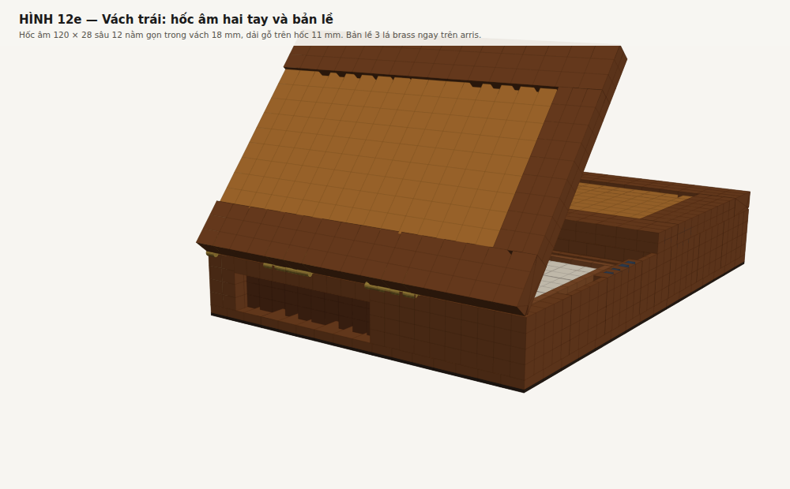

build/dong-hoc-ban-le.pdf. Hình: figs/fig8-dong-hoc-ban-le. Tính toán: tools/hinge_kinematics.py. Mọi con số trong tài liệu này do script sinh ra. Chạy lại để đối chiếu.Bản trước đặt trục xoay ở giữa bề dày nắp và suy ra một ống gỗ có bán kính bằng nửa bề dày nắp (Ø18 trên hộp cao 65, rồi Ø12 sau khi làm nắp mỏng đi). Lập luận khi đó là:
Câu đó đúng, nhưng chỉ đúng bên trong một giả thiết chưa hề được đặt câu hỏi: rằng trục nằm ở giữa bề dày nắp. Ràng buộc thật sự của bài toán chỉ có một — trong cả hành trình 0–180°, vật liệu cánh nắp không được cắt vào vật liệu thân hộp. Vị trí trục là biến, không phải dữ kiện.
hinge_kinematics.py §1 không lập luận bằng lời. Nó bo tròn đầu cánh nắp thành mũi tròn bán kính R quanh trục, quét cánh 0→180° từng nửa độ, và tìm R lớn nhất mà cánh vẫn quay lọt:
| đặt trục ở | toạ độ | mũi tròn R | suy ra |
|---|---|---|---|
| giữa bề dày nắp (bản trước) | (7,5 , 54,5) | 7,52 mm | ống gỗ Ø15,0 |
| cạnh ngoài trên của thân — arris | (0 , 47) | 0,00 mm | không phải bỏ gì |
Hàng một tái tạo lại đúng kết quả cũ, và cho thấy nó đến từ đâu: R = 7,5 = 15/2 = nửa bề dày nắp. Không phải trùng hợp — mũi tròn buộc phải tiếp tuyến cả mặt trên lẫn mặt dưới nắp, mà hai mặt đó cách nhau đúng bề dày nắp. Nói cách khác: "R = nửa bề dày nắp" là hệ quả bắt buộc của chỗ đặt trục, không phải một lựa chọn thiết kế. Muốn ống thanh hơn thì chỉ còn cách làm nắp mỏng hơn — đó là lý do bản trước phải hạ nắp 18 → 12, và vẫn còn thô.
Hàng hai là câu trả lời. Đưa trục ra arris — góc chung của cả thân lẫn nắp — thì hai góc đầu cánh nắp trùng với chính trục: bán kính quét bằng 0, chúng không quét ra cái gì cả.
Đó là lý do bản lề trong ảnh tham chiếu gần như vô hình trong khi nắp vẫn dày: họ không đặt trục vào giữa bề dày nắp. Bề dày nắp không nói gì về bản lề cả.
| Điểm | Đóng X | Đóng Z | Mở 180° X | Mở 180° Z |
|---|---|---|---|---|
| mép bản lề, mặt dưới | 0,0 | 47,0 | 0,0 | 47,0 |
| mép bản lề, mặt trên | 0,0 | 62,0 | 0,0 | 32,0 |
| mép khe giữa, mặt dưới | 184,2 | 47,0 | −184,2 | 47,0 |
| mép khe giữa, mặt trên | 184,2 | 62,0 | −184,2 | 32,0 |
Cánh mở nằm ngang, mặt trên phẳng tại Z47 — đúng cao độ vành thân, vươn ra 184,25 mm.
Cái giá duy nhất của việc dời trục: cánh mở nằm thấp hơn dải cao độ của nắp lúc đóng đúng một bề dày nắp (Z32–47 thay vì Z47–62). Và đó không phải giá: mặt trên của cánh mở là cái mặt người chơi bỏ bài lên, nó phẳng với vành thân — đúng cái ta cần. Mặt đó chính là lòng lõm ôm tấm Nu khi đóng, tức khay bỏ bài sâu 5,0 mm.
Ở 180°, mặt cạnh bản lề của nắp (mặt phẳng X = 0, từ Z44,75 xuống Z32) áp đúng vào mặt ngoài vách thân — cùng một mặt phẳng X = 0. Hai mặt đồng phẳng và chạm nhau, cánh không quay tiếp được.
Diện tích tiếp xúc 12,75 × 350 = 4 462 mm², cả chiều dài cánh.
| trường hợp tải | M (N·m) | F (N) | MPa | hệ số |
|---|---|---|---|---|
| chỉ trọng lượng cánh | 0,59 | 69 | 0,015 | 905× |
| + 2 kg quân bỏ trên khay | 2,39 | 282 | 0,063 | 222× |
| + người chơi tỳ 5 kg ở mép ngoài | 9,62 | 1 132 | 0,254 | 55× |
Bản trước phải phay một mặt chặn phẳng nằm trong lòng mắt mộng, hệ số 10×. Nay chặn là cả mặt cạnh nắp áp vào cả mặt vách thân: hệ số hàng trăm lần, và không phải gia công gì thêm.
Quét 1° một bước, 10 điểm biên trên cánh. Không va chạm ở bất kỳ góc nào. Điểm thấp nhất Z = 32,0 (= vành thân trừ bề dày nắp — đúng vị trí cánh mở).

| Kiểu | bản lề lá brass (butt hinge), khớp nằm đúng trên arris |
| Số lượng | 3 chiếc mỗi cánh, tổng 6 chiếc |
| Kích thước | 40 dài × 14 rộng mỗi cánh × 1,8 dày, khớp Ø4,5 |
| Vị trí theo Y | 88 · 175 · 262 |
| Mortise | 0,9 mm vào vành thân + 0,9 mm vào mặt dưới nắp → khép kín không hở khe |
| Bo lượn arris | R2,25 trên cạnh ngoài TRÊN của vách thân và cạnh ngoài DƯỚI của nắp |
| Khớp lộ ra | không lộ ra ngoài mặt vách — chìm trong đường chỉ góc |
| Vít | brass, 2 con mỗi cánh mỗi chiếc |
| Vật liệu | brass CuZn39Pb3 |
| Khối lượng | 135 g cả bộ |
Khớp Ø4,5 có tâm nằm đúng trên arris nên nó ăn vào gỗ cả hai bên. Phải bo lượn hai cạnh arris đúng R2,25; đóng lại, hai đường lượn khép thành một lỗ Ø4,5 ôm trọn khớp. Kết quả: khớp chìm trong đường chỉ góc, nhìn nghiêng chỉ thấy một sợi brass Ø4,5 chạy dọc cạnh hộp.
Giá phải trả của việc bo lượn: mặt chặn 180° còn 12,75 thay vì 15 mm — mất 15 %. Hệ số an toàn vẫn 55×. Đây là chỗ cho phần cứng (R2,25), không phải chỗ cho hình học (R7,5): chênh 3,3 lần.
Cánh mở là dầm console dài 184 mm, ngàm dọc mặt chặn 180°. Người chơi tỳ 5 kg ở mép ngoài, tải trải đều trên 100 mm bề rộng:
Đặc tính kiểm: võng đầu cánh mở ≤ 1,5 mm dưới tải 5 kg tại mép ngoài.
| Trục xoay | X = 0 (mặt ngoài vách), Z = 47 (= vành thân) |
| Suy ra từ | trục phải ở góc chung của hai chi tiết → bán kính quét = 0 |
| Bản lề | 6 bản lề brass 40 × 14 × 1,8, khớp Ø4,5 |
| Ống gỗ / mắt mộng | KHÔNG CÒN |
| Bo lượn arris | R2,25 hai cạnh — khép thành lỗ Ø4,5 ôm khớp |
| Chặn 180° | mặt cạnh nắp áp vào mặt ngoài vách thân — tự nhiên |
| Góc mở | 180° +0/−1° |
| Vị trí cánh khi mở | nằm ngang, mặt trên Z47 (= vành thân), vươn ra 184 |
| Bề dày nắp | 15 đều, không vát — không còn ràng buộc gì tới bản lề |
| Phủ bì | 370 × 350 × 62 |
| Khối lượng | 6,26 kg (khay lõi ổn định) / 6,88 kg (khay cocobolo) |
| bỏ đi | vì |
|---|---|
| ống gỗ Ø12–Ø18 | trục không còn nằm trong vật liệu |
| 7 mắt mộng gỗ xen kẽ, bước 45 | không còn ống để cắt thành mắt |
| 2 chốt brass Ø4 × 160 xuyên mắt mộng | bản lề lá tự mang khớp |
| mặt chặn 180° phay trong lòng mộng | mặt cạnh nắp áp thẳng vào mặt vách |
| ràng buộc "vách bản lề phải dày 18 để chứa ống" | vách 18 nay chỉ do hốc âm hai tay (12 + 6) |
| ràng buộc "nắp phải mỏng để ống thanh" | nắp dày bao nhiêu cũng được → chọn 15 |
Thêm vào: 6 bản lề brass mua sẵn, 135 g, và hai đường bo lượn R2,25.
docs/DONG-HOC-BAN-LE.md bang tools/md2html.py. Moi tri so sinh tu tools/box_spec.py.